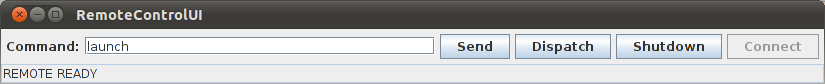
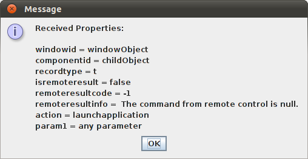

-
確認安裝有 JDK 1.6+、Ant 1.8+ 跟最新版的 Android SDK。將
JAVA_HOME、ANT_HOME跟ANDROID_HOME分別指向不同的安裝目錄，並將$JAVA_HOME/bin、$ANT_HOME/bin、$ANDROID_HOME/tools跟$ANDROID_HOME/platform-tools加到PATH環境變數。 -
到官網下載
RobotiumRCRelease<version>.ZIP，解開後執行Setup-XXX開始安裝：在 Ubuntu 下將 Robotium RC 安裝到/home/username/dev/robotium-rc$ ./Setup-Unx.sh $ANDROID_HOME Using '/home/username/dev/android' as path to Android SDK. If this path is incorrect, the user will need to manually edit the APK 'local.properties' files. You java version is 1.6.0_20, major is 1, minor is 6. Do you want to install RobotiumRC [Y|N], default is Y? The default RobotiumRC installation directory is /usr/local/robotiumrc, do you accept it [Y|N], default is Y? N Input the directory where you want to install RobotiumRC: /home/username/dev/robotium-rc
RobotiumRC will be installed to directory: /home/username/dev/robotium-rc
Do you want to see details during installation [Y|N], default is Y?
Y
Executing: java -jar robotiumrcinstall.jar -robotiumrc /home/username/dev/robotium-rc -v
Installing on Linux
/home/username/dev/robotium-rc
RobotiumRC will be installed to directory: /home/username/dev/robotium-rc
Do you want to see details during installation [Y|N], default is Y?
Y
Executing: java -jar robotiumrcinstall.jar -robotiumrc /home/username/dev/robotium-rc -v
Installing on Linux  OSID:3
RobotiumRC InstallDir: /home/username/dev/robotium-rc
Start RobotiumRC Installation......
Completed RobotiumRC Installation.
ANDROID_HOME=/home/username/dev/android
Creating /home/username/dev/robotium-rc/SAFSTCPMessenger/local.properties
Creating /home/username/dev/robotium-rc/RobotiumTestRunner/local.properties
Modifying file and directory permissions for write access...
OSID:3
RobotiumRC InstallDir: /home/username/dev/robotium-rc
Start RobotiumRC Installation......
Completed RobotiumRC Installation.
ANDROID_HOME=/home/username/dev/android
Creating /home/username/dev/robotium-rc/SAFSTCPMessenger/local.properties
Creating /home/username/dev/robotium-rc/RobotiumTestRunner/local.properties
Modifying file and directory permissions for write access...自訂 Robotium RC 的安裝目錄（ ROBOTIUM_RC_HOME）。其實 Setup-XXX的功能單純是將RobotiumRCInstall.ZIP解開到ROBOTIUM_RC_HOME，然後將local.properties裡的值更新成符合這台電腦的設定而已。 -
重新產生 SAFS TCP Messenger (
SAFSTCPMessenger-debug.apk)。（這支檔案本來就在，只是要用本機的 debug key 重新 sign 過而已）$ cd $ROBOTIUM_RC_HOME/SAFSTCPMessenger $ ant debug -
重新產生 Robotium Test Runner (
RobotiumTestRunner-debug.apk)。首先確認
AndroidManifest.xml裡<instrumentation>的targetPackage確實指向待會要測試的 Spinner (com.android.example.spinner)。$ cd $ROBOTIUM_RC_HOME/RobotiumTestRunner $ ant debug BUILD FAILED /home/usename/dev/android/tools/ant/build.xml:517: Unable to resolve project target 'Google Inc.:Google APIs:14'因為 project.properties有一行target=Google Inc.:Google APIs:14的關係。不過這跟 Robotium Test Runner 不能裝在較低的 Android version 無關，那是因為
AndroidManifest.xml裡的minSdkVersion="10"所造成，只要將 API level 調低即可，例如minSdkVersion="7"，就可以安裝到 Android 2.1+ 的系統上。 -
將
SpinnerActivity.apk重新 re-sign 過：$ cd $ROBOTIUM_RC_HOME/SampleSpinner $ java -jar ../SoloRemoteControl/libs/re-sign.jar SpinnerActivity.apk SpinnerActivity-debug.apk Running jarsigner Command line: /usr/lib/jvm/java-6-openjdk/bin/jarsigner -keystore /home/username/.android/debug.keystore -storepass android -keypass android /tmp/resigner6181127944260967593.apk androiddebugkey jarsigner finished with following output: Running zipalign Command line: /home/username/dev/android/tools/zipalign -f 4 /tmp/resigner6181127944260967593.apk SpinnerActivity-debug.apk zipalign finished with following output: apk successfully re-signed Package name: com.android.example.spinner Main activity:com.android.example.spinner.SpinnerActivity
接下來用內附的小工具 RemoteControlUI，簡單測試一下 host 跟 emulator/device 間的通訊。下面是在 Android 2.3.3 emulator 上面所做的測試。
-
將 SAFS TCP Messenger、Robotium Test Runner 以及 Spinner 受測程式安裝到 device/emulator。
$ cd $ROBOTIUM_RC_HOME $ adb install SAFSTCPMessenger/bin/SAFSTCPMessenger-debug.apk $ adb install RobotiumTestRunner/bin/RobotiumTestRunner-debug.apk $ adb install SampleSpinner/SpinnerActivity-debug.apk -
開啟 LogCat，準備觀察 Robotium Test Runner 跟 SAFS Messenger Service 的反應。
-
一開始先把 Spinner 手動叫起來。
LogCatI/ActivityManager( 71): Starting: Intent { act=android.intent.action.MAIN cat=[android.intent.category.LAUNCHER] flg=0x10200000 cmp=com.android.example.spinner/.SpinnerActivity } from pid 218 I/ActivityManager( 71): Start proc com.android.example.spinner for activity com.android.example.spinner/.SpinnerActivity: pid=430 uid=10036 gids={1015, 1007} ... I/ActivityManager( 71): Displayed com.android.example.spinner/.SpinnerActivity: +2s32ms目前 Spinner 的 PID 是 430。
$ adb shell ps USER PID PPID VSIZE RSS WCHAN PC NAME app_36 430 33 84716 22176 ffffffff afd0c51c S com.android.example.spinner -
啟動 device/emulator 上的 Robotium Test Runner 跟 SAFS Messenger Service。
$ adb shell am instrument -w com.jayway.android.robotium.remotecontrol.client/com.jayway.android.robotium.remotecontrol.client.RobotiumTestRunner這個時候就可以在 notification area 看到 SAFS Messenger Service：
LogCatD/AndroidRuntime( 443): D/AndroidRuntime( 443): >>>>>> AndroidRuntime START com.android.internal.os.RuntimeInit <<<<<< D/AndroidRuntime( 443): CheckJNI is ON D/AndroidRuntime( 443): Calling main entry com.android.commands.am.Am I/ActivityManager( 71): Force stopping package com.android.example.spinner uid=10036
I/Process ( 71): Sending signal. PID: 430 SIG: 9
E/InputDispatcher( 71): channel '408afea8 com.android.example.spinner/com.android.example.spinner.SpinnerActivity (server)' ~ Consumer closed input channel or an error occurred. events=0x8
E/InputDispatcher( 71): channel '408afea8 com.android.example.spinner/com.android.example.spinner.SpinnerActivity (server)' ~ Channel is unrecoverably broken and will be disposed!
I/WindowManager( 71): WIN DEATH: Window{408afea8 com.android.example.spinner/com.android.example.spinner.SpinnerActivity paused=false}
I/ActivityManager( 71): Start proc com.android.example.spinner for added application com.android.example.spinner: pid=451 uid=10036 gids={1015, 1007}
W/InputManagerService( 71): Got RemoteException sending setActive(false) notification to pid 430 uid 10036
...
I/ActivityManager( 71): Start proc org.safs.android.messenger for service org.safs.android.messenger/.MessengerService: pid=459 uid=10034 gids={3003, 1015}
D/RobotiumTestRunner( 451): SAFS TCP Messenger Binding:MessengerService
D/RobotiumTestRunner( 451): Found target Package: com.android.example.spinner
D/RobotiumTestRunner( 451): Found Launch Intent Action: android.intent.action.MAIN
D/RobotiumTestRunner( 451): Is ACTION_MAIN : true
D/RobotiumTestRunner( 451): Found Launch Component: com.android.example.spinner.SpinnerActivity
D/RobotiumTestRunner( 451): Found 1 target Activities.
D/RobotiumTestRunner( 451): Activity Name: com.android.example.spinner.SpinnerActivity
D/RobotiumTestRunner( 451): createTestCase commencing...  D/RobotiumTestRunner( 451): createTestCase COMPLETE.
D/RobotiumTestRunner( 451): initializeInstrumentation commencing...
D/RobotiumTestRunner( 451): initializeInstrumentation COMPLETE.
I/System.out( 459): SocketProtocol.addListener(): AbstractRunner was successfully registered.
D/RobotiumTestRunner( 451): SAFS TCP Messenger Attached:ComponentInfo{org.safs.android.messenger/org.safs.android.messenger.MessengerService}
D/RobotiumTestRunner( 451): MessengerRunner : sendRegisterEngine...
D/MessengerRunner( 451): Engine sending message: null
D/SAFSMessenger( 459): received EngineRegistered notification...
D/SAFSMessenger( 459): SocketProtocol.createRemoteServerSocket(): NetworkInterface: eth0, 10.0.2.15
D/SAFSMessenger( 459): SocketProtocol.createRemoteServerSocket(): NetworkInterface: lo, 127.0.0.1
D/SAFSMessenger( 459): SocketProtocol.createRemoteServerSocket(): Try to create socket server at port '2410'.
D/SAFSMessenger( 459): SocketProtocol.createRemoteServerSocket(): Remote Runner available on port: 2410
D/RobotiumTestRunner( 451): createTestCase COMPLETE.
D/RobotiumTestRunner( 451): initializeInstrumentation commencing...
D/RobotiumTestRunner( 451): initializeInstrumentation COMPLETE.
I/System.out( 459): SocketProtocol.addListener(): AbstractRunner was successfully registered.
D/RobotiumTestRunner( 451): SAFS TCP Messenger Attached:ComponentInfo{org.safs.android.messenger/org.safs.android.messenger.MessengerService}
D/RobotiumTestRunner( 451): MessengerRunner : sendRegisterEngine...
D/MessengerRunner( 451): Engine sending message: null
D/SAFSMessenger( 459): received EngineRegistered notification...
D/SAFSMessenger( 459): SocketProtocol.createRemoteServerSocket(): NetworkInterface: eth0, 10.0.2.15
D/SAFSMessenger( 459): SocketProtocol.createRemoteServerSocket(): NetworkInterface: lo, 127.0.0.1
D/SAFSMessenger( 459): SocketProtocol.createRemoteServerSocket(): Try to create socket server at port '2410'.
D/SAFSMessenger( 459): SocketProtocol.createRemoteServerSocket(): Remote Runner available on port: 2410 一開始 Spinner 的 process (PID = 430) 會被砍掉（畫面回到 home screen），另起一個 processs (PID = 451)。 然後 Messenger Service 會被帶起來，執行在另一個 process （PID = 459），並在 2410 埠服務。 這是 logs 裡唯一看得到 instrumentation 的地方… $ adb shell ps USER PID PPID VSIZE RSS WCHAN PC NAME app_36 451 33 86316 20328 ffffffff afd0c51c S com.android.example.spinner app_34 459 33 85024 20032 ffffffff afd0c51c S org.safs.android.messenger -
開啟 RemoteControlUI，按 Connect 建立連線。
$ cd $ROBOTIUM_RC_HOME/SoloRemoteControl/libs $ java -cp robotium-remotecontrol.jar:safsautoandroid.jar:safssockets.jar com.jayway.android.robotium.remotecontrol.solo.RemoteControlUIRemoteControlUISocketProtocol.addListener(): AbstractRunner was successfully registered. DroidSocketProtocol.addListener(): AbstractRunner was successfully registered. Port forwarding will be from '2411' DroidSocketProtocol.createRemoteClientConnection(): Local Runner attempting to make remote Runner connection... Forwarding port from 'local:2411' to 'device/emulator:2410'
Attempting to initialize Android Tools...
toolHome is null, can't set it.
Setting Android Tools SDK Dir to /home/jeremy/dev/android
DroidSocketProtocol.createRemoteClientConnection(): Remote Runner seems to be connected!
DroidSocketProtocol.waitForInput(): Received client input: PROTOCOLVERSION=1
DroidSocketProtocol.verifyRemoteClient(): client protocol 1 connected.
DroidSocketProtocol.createRemoteClientConnection(): Remote Runner has been connected!
DroidSocketProtocol.waitForInput(): Received client input: readyRemoteControlUI 會自己建立 port forwarding。 LogCatD/SAFSMessenger( 459): SocketProtocol.acceptControllerConnection(): Verifying controller Socket connection from: 127.0.0.1 port 2410 D/SAFSMessenger( 459): SocketProtocol.waitForInput(): Received client input: PROTOCOLVERSION D/SAFSMessenger( 459): SocketProtocol.verifyControllerClient(): Controller verification has succeeded. D/SAFSMessenger( 459): sending IPC Message ID: 12 D/RobotiumTestRunner( 451): MessengerRunner : Listener received remoteConnected... D/RobotiumTestRunner( 451): MessengerRunner : Handler received CONNECTED message: null D/RobotiumTestRunner( 451): MessengerRunner : sendReady...(null) D/MessengerRunner( 451): Engine sending message: null D/SAFSMessenger( 459): sendTCPMessage: ready -
送出
launchcommand，將 Spinner 執行起來，送出closecommand，將 Spinner 關閉。 -
再送出一次
launchcommand 將 Spinner 執行起來，到這裡 PID 都沒有產生變化。$ adb shell ps USER PID PPID VSIZE RSS WCHAN PC NAME app_36 451 33 90760 26212 ffffffff afd0c51c S com.android.example.spinner app_34 459 33 85036 20468 ffffffff afd0c51c S org.safs.android.messenger -
按下 Dispatch 做類似 ECHO 的測試，其中
remoteresultcode跟remoteresultinfo是 emulator/device 端額外附加上去的。RemoteControlUIDroidSocketProtocol.waitForInput(): Received client input: running DroidSocketProtocol.waitForInput(): Received client input: resultprops:#ResultProperties #Sun Dec 23 10:03:24 GMT+00:00 2012 param1=any parameter componentid=childObject remoteresultcode=-1 action=launchapplication remoteresultinfo=\ The command from remote control is null. windowid=windowObject isremoteresult=false recordtype=t DroidSocketProtocol.waitForInput(): Received client input: readyLogCatD/SAFSMessenger( 459): SocketProtocol.waitForInput(): Received client input: dispatchprops:#testRecordData D/SAFSMessenger( 459): #Sun Dec 23 18:03:38 CST 2012 D/SAFSMessenger( 459): windowid=windowObject D/SAFSMessenger( 459): componentid=childObject D/SAFSMessenger( 459): recordtype=t D/SAFSMessenger( 459): action=launchapplication D/SAFSMessenger( 459): param1=any parameter D/SAFSMessenger( 459): sending IPC Message ID: 5, #testRecordData D/SAFSMessenger( 459): #Sun Dec 23 18:03:38 CST 2012 D/SAFSMessenger( 459): windowid=windowObject D/SAFSMessenger( 459): componentid=childObject D/SAFSMessenger( 459): recordtype=t D/SAFSMessenger( 459): action=launchapplication D/SAFSMessenger( 459): param1=any parameter D/RobotiumTestRunner( 451): MessengerRunner : Listener received remoteDispatchProps... D/RobotiumTestRunner( 451): MessengerRunner : sendRunning...(null) D/MessengerRunner( 451): Engine sending message: null D/RobotiumTestRunner( 451): MessengerRunner : Handler Received DispatchProps! D/SAFSMessenger( 459): sendTCPMessage: running D/RobotiumTestRunner( 451): MessengerRunner : Engine sending result Properties. D/RobotiumTestRunner( 451): MessengerRunner : sendReady...(null) D/MessengerRunner( 451): Engine sending message: null D/SAFSMessenger( 459): sendTCPMessage: resultprops:#ResultProperties D/SAFSMessenger( 459): #Sun Dec 23 10:03:24 GMT+00:00 2012 D/SAFSMessenger( 459): param1=any parameter D/SAFSMessenger( 459): componentid=childObject D/SAFSMessenger( 459): remoteresultcode=-1 D/SAFSMessenger( 459): action=launchapplication D/SAFSMessenger( 459): remoteresultinfo=\ The command from remote control is null. D/SAFSMessenger( 459): windowid=windowObject D/SAFSMessenger( 459): isremoteresult=false D/SAFSMessenger( 459): recordtype=t D/SAFSMessenger( 459): sendTCPMessage: ready -
按下 Shutdown 將 device/emulator 上的 Robotium Test Runner 跟 SAFS Messenger Service 停掉。
LogCatD/SAFSMessenger( 459): SocketProtocol.waitForInput(): Received client input: remoteshutdown D/SAFSMessenger( 459): sending IPC Message ID: 14 D/RobotiumTestRunner( 451): MessengerRunner : Listener received remoteShutdown command... D/RobotiumTestRunner( 451): MessengerRunner : sendRunning...(null) D/MessengerRunner( 451): Engine sending message: null D/RobotiumTestRunner( 451): MessengerRunner : Handler Received Shutdown Command! D/RobotiumTestRunner( 451): MessengerRunner : sendShutdown...(null) D/MessengerRunner( 451): Engine sending message: null D/SAFSMessenger( 459): sendTCPMessage: running D/SAFSMessenger( 459): Service has been destroyed! D/SAFSMessenger( 459): sendTCPMessage NullPointerException, null D/SAFSMessenger( 459): sendTCPMessage: shutdown D/SAFSMessenger( 459): sendTCPMessage NullPointerException, null D/SAFSMessenger( 459): sending IPC Message ID: 0 D/RobotiumTestRunner( 451): MessengerRunner : Listener received serviceShutdown... D/RobotiumTestRunner( 451): doUnbindService issuing stopService(shutdown)... D/RobotiumTestRunner( 451): SAFS TCP Messenger Release:MessengerService D/RobotiumTestRunner( 451): MessengerRunner : Success: SAFS TCP Messenger Release:MessengerService D/RobotiumTestRunner( 451): MessengerRunner : Engine sending simple result: 0, Success: SAFS TCP Messenger Release:MessengerService D/SAFSMessenger( 459): sendTCPMessage: result:0:Success: SAFS TCP Messenger Release:MessengerService D/SAFSMessenger( 459): sendTCPMessage NullPointerException, null I/ActivityManager( 71): Force stopping package com.android.example.spinner uid=10036
D/AndroidRuntime( 443): Shutting down VM
D/dalvikvm( 443): GC_CONCURRENT freed 100K, 71% free 297K/1024K, external 0K/0K, paused 2ms+2ms
I/AndroidRuntime( 443): NOTE: attach of thread 'Binder Thread #3' failed
D/jdwp ( 443): adbd disconnected
I/Process ( 71): Sending signal. PID: 451 SIG: 9
E/InputDispatcher( 71): channel '407a6b50 com.android.example.spinner/com.android.example.spinner.SpinnerActivity (server)' ~ Consumer closed input channel or an error occurred. events=0x8
E/InputDispatcher( 71): channel '407a6b50 com.android.example.spinner/com.android.example.spinner.SpinnerActivity (server)' ~ Channel is unrecoverably broken and will be disposed!
I/WindowManager( 71): WINDOW DIED Window{407a6b50 com.android.example.spinner/com.android.example.spinner.SpinnerActivity paused=false}
W/InputManagerService( 71): Got RemoteException sending setActive(false) notification to pid 451 uid 10036shutdown 時 Spinner 的 process 會被砍掉（畫面回到 home screen）。 原來執行 instrumentation 的畫面$ adb shell am instrument -w com.jayway.android.robotium.remotecontrol.client/com.jayway.android.robotium.remotecontrol.client.RobotiumTestRunner INSTRUMENTATION_CODE: 0最後只剩 Messenger Service 的 process 還在，但 notification area 的 SAFS Messenger Service 已經不見了。
$ adb shell ps USER PID PPID VSIZE RSS WCHAN PC NAME app_34 459 33 84000 20400 ffffffff afd0c51c S org.safs.android.messenger
相同的步驟，在實體裝置（HTC Desire S；Android 2.3.5）上驗證過也沒問題。